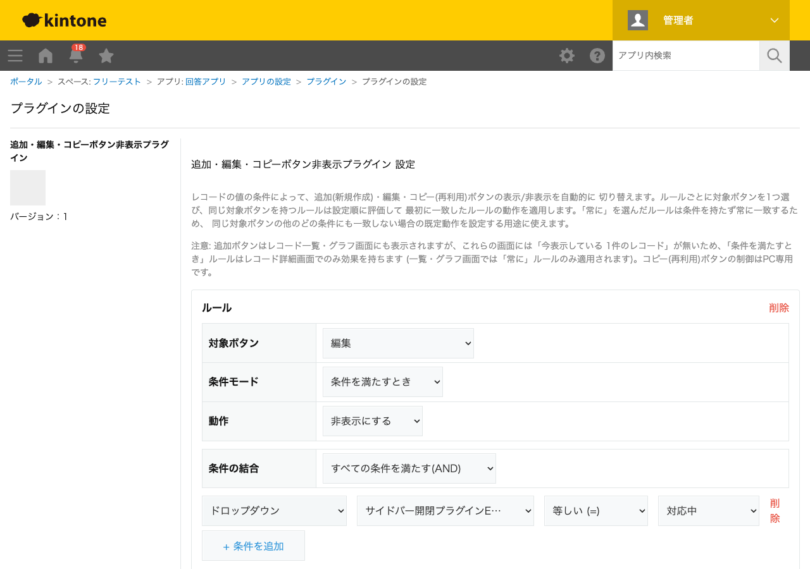

GovAppsプラグイン 安全性を確認できる無料kintoneプラグイン集
レコードの値の条件によって、追加(新規作成)・編集・コピー(再利用)ボタンの表示/非表示を自動的に 切り替えます。日時・ラジオボタン・ドロップダウン・チェックボックス・プロセス管理ステータスを 組み合わせた条件(AND/OR結合)、または「常に」でボタンごとにルールを設定できます。
重要な注意: 本プラグインが提供するのはUIレベルの表示/非表示のみで、レコードの 追加・編集・複製操作そのものを禁止するアクセス制御機能ではありません。本当に操作を禁止したい 場合は、kintoneアプリの「アクセス権」設定を使ってください。
プロセス管理のステータスが「完了」や「承認済」になったレコードの詳細画面で、編集ボタン・コピー(再利用)ボタンを非表示にしておくことで、うっかり編集・複製してしまう操作ミスを画面上で目立たなくできます(権限そのものを奪うものではありません)。
レコード詳細画面では表示中のレコードの値で条件を評価できるため、「このレコードの区分では新規作成させたくない」といった画面表示を作れます。なお、レコード一覧・グラフ画面には「今表示している1件のレコード」が無いため、これらの画面では「常に」ルールのみが有効になります。
追加ボタンはレコード一覧・詳細・グラフ画面(PC)/一覧画面(モバイル)に表示されますが、一覧・グラフ画面には「今表示している1件のレコード」が無いため、条件付きルールはレコード詳細画面でのみ効果を持ちます(一覧・グラフ画面では「常に」ルールのみ適用されます)。コピー(再利用)ボタンの制御はPC専用です。
kintoneセキュアコーディングガイドラインに沿って実装時にチェックしています。特に重要な点は次のとおりです。
showAddRecordButton()/showEditRecordButton()/showDuplicateRecordButton())のみで行います。kintone.api()(kintone自身への呼び出し専用の内部ラッパー)経由でGET /k/v1/app/status.jsonを呼びます。外部サーバーへの通信・外部ライブラリは一切使用していません。詳細な確認項目・確認日は下記GitHubのチェックリストに全項目を掲載しています。

レコード画面側はボタンの表示/非表示を切り替えるJavaScript APIのみで完結し、REST APIは実行しません。
設定画面を開いたときのみ、プロセス管理のステータス名一覧を取得するためにREST API
(GET /k/v1/app/status.json)を1回実行しますが、これは管理者が設定画面を開いたときだけ
であり、レコードの閲覧・保存のたびに実行されるものではありません。